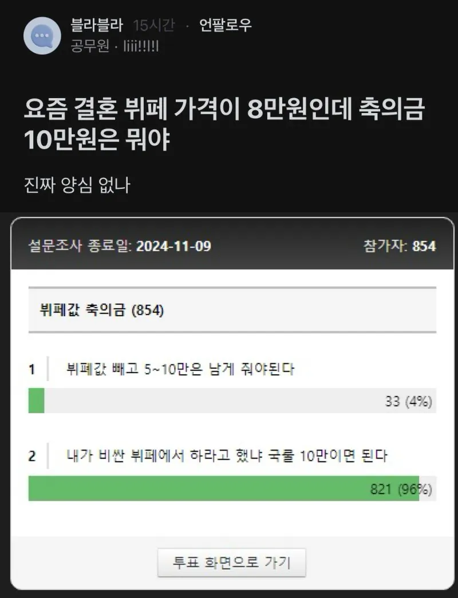

누가 거기서 하라고 칼들고 협박함?

누가 거기서 하라고 칼들고 협박함?
차비에 주말 시간내는것도 생각도못함ㅋㅋ
9.6 짜리서 했는데 10 내면 당연히 고맙고 전혀 노상관이었음ㅇㅇ 국룰이라 당연하지. 근데 생각보다 20 낸 사람이 많아서 놀람
부모가 뿌린거 거두는 날이긴 하지
난 3만원 이체하고 안감
밥장사하는사람은 3만원 이득이니까 불만없고
나도 3만원 거지 동냥줬다 생각하니까 아쉽지도 않고
3만원 가지고
고마워할 필요도, 생색낼 필요도 없는돈이라 좋음
3만원은 씹 개백수도 안할 돈인데 ㅋㅋㅋ
너 빼고 주변사람 다 욕할 듯
밥인먹고 안친하면 용인하겠지 대부분 그럴경우 5민원하는거 같다만 3만원까지 그냥 그런갑다 하는거지
이체하고 안가는건 5만원임ㅋㅋ
5만원 밑으로 축의하는사람 진짜 단한명도 못봄
5년전 내 결혼식에도 없었음
넌 무조건 기억에 남는다. 아 3만원 한 걔?
3만원이면 주고도 욕먹음
이제는 한국에서 결혼식할때 3만원 주는 사람자체가 없음. 차라리 안친하면 안주는게 나음. 그냥 3만원준 이상한 사람으로 기억남음
3만원이 왜 평생 욕먹는 건지 알려줌
1. 결혼식 끝나면 축의 들어온 내역을 보통 신랑신부 부모가 정리해서 종이에다가 전부 적음
2. 50~100명 이상의 내역 가운데 혼자 3만원인 걸 가족들이 먼저 봄 "뭐지?"
3. 이 내역들을 사진 찍어서 신랑신부에게 전달. 나중에 축의할 때 실수하지 말고, 감사표현 잘 하라는 뜻
4. 신랑신부는 폰에 이걸 평생 갖고 다님
5. 축의할 일 생길때마다 꺼내보는데 니 혼자 3만원인 게 계속 보임
나도 지금 다시 축의목록 봐도 최하 5만원이고 보통 10만원인데 3만원 있으면 계속 눈길 갔을 듯. 물론 소액이라도 준 건 고마운데 그 정도면 아예 안 주는 게 좋을 거 같아
3만원이 용납 가능한 유일한 겅우의 수는 미성년자밖에 없어 ㅋㅋㅋ 그마저도 얘는 왜 이걸 따로 냈대? 하는 수준
작년초 결혼했고 직장동료 100명한테 청첩장보냈고 주변 지인 통틀어서 안오더라도 최소 5만원이었음. 3만원 너혼자 준다? 진짜 차라리 까먹었구나 생각이들게 안보내면 안보내지 3만원은 주고도 욕먹음. 유일하게 혼자 튄다? 진짜 이건뭐 방명록본 그누구라도 기억에남을정도로 치명적인거임;; 2만원에 평생 누군가한테 찍힐바에 걍 5만원내는게 훨나은데; 나중에 상황역전되서 누구하나 돈아낄랴고 이상한금액 받으면기분 좆같을걸?
축의금 액수로 욕하는 인간이 진짜 있구나
난 만원이든 천원이든 내 결혼식을 알아줬다는것만으로도 감사했는데 ㅎㅎ
이런인간한테는 3만원으로 딱 거지 동냥줬다고 생각이 들어서 좋음 ㅋㅋ
본인 결혼식 축하를 한순간에 거지 동냥질로 바꾸네
거지 ㅋㅋ
난 기본 5만원 내지만 적은 금액으로 욕하는 애들 이해가 안돼...난 적게 줘도 그냥 고맙던데?
욕하는 심리를 모르겠음...3만원이 거슬리는거면 그냥 마음이 가난한듯
욕하는게 아님. 걍 눈에 밟히는거임 ㅋㅋㅋ 나도 3만원 내본적도 받은적도 없는데 개지랄이노
느그부부 둘보다 내가 원징은 더많을걸 ㅋㅋㅋ 가난한건 니통장이고 ㅋㅋ 느그둘말고 3만원운 이례적인거라 찍힌거라고 ㅋㅋ 뭔 욕했다고 지랄이냐 븅신년아
바로 패드립하는거 보니 마음이 가난한게 맞는듯 ㅠ 난 욕하는 애들 심리를 모르겠다 한거지 니가 욕했다곤 안했는데 ㅠ
어휴 병신 ㅋㅋㅋ 말길을 못처알아먹노 니가 그리 생각해봤자 위덧글만봐도 그건 찍힌거라니까
말길이 아니라 말귀 ㅠㅠ 마음이 가난하구나 화이팅!!
만약 한달만에 내 부서하고 옆부서 선후배 6명이 경조사가 있다면 얼마씩 낼거임? 결혼4 돌잔치1 조사1
돌잔치 무시... 근데 초대장 받았으면 불참 5
결혼 불참 5 (친하면 참석 10~15)
조사 참석 10이상
불참 5가 적당...
걍 와주기만해도 고맙지않나?
사람 많으면 기분좋던데 돈은 모르겠고...
결혼할 때 됐나보네 병신같은 소리 싸지르는거 보니까
ㅋㅋ 팁도 받지 왜? ㅋㅋㅋㅋ
그 이전에 본인은 평소 다른사람 경조사에 얼마나 썼는지가 더 궁굼 ㅋㅋㅋ
솔직히 뷔페값보다 그게 더 중요한건데 맨날 뷔페이야기나 하고있는거 보면 짜침.
10련이
양심을 왜따져 ㅅㅂ련이 축하해주러 참석해준걸 고맙게 생각해야지
가준것만도 고맙다고 해야된다 씨발년아
병신 지잔친데 그걸따지냐 와주면고맙다고 쌍수들어 반겨야지
존나친한데 가면 20 적당히 친한데 안가거나 걍 직장동료인데 가면 10 직장동료고 안가면 5 로 정해놨음
ㅋㅋ청첩장에 저렇게 써놓지 그러냐 식비 8만원이라고. 아무도 안와봐야 정신차리겠네
공무원은 5만원이 국룰임 ㅋㅋ
결혼식 축하해주러가서 하객알바비만큼 청구하면 되는거지?
시발련아 피같은 주말 시간내서 간 하객들 출장비라도 대주면서 징징대던가 씹련이
무슨 경조사 비 상부상조하는걸
당당하게 돈 쳐받는 장사철인줄 아네
가격이 얼마인지 어떻게 아냐고
청첩장에 가격을 적어놓던가. 내가 그것까지 검색해서 가야 되나.
축하해주러 가는데 본전치게 해주면 감사히 생각해야지. 장사하나
저딴말하는새끼들은 꼭 결혼식까지가는 차비는 생각도 안하더라
10만원 내고 참석까지 해주면
참석해줘서 고맙다고 감사함을 표현해야지